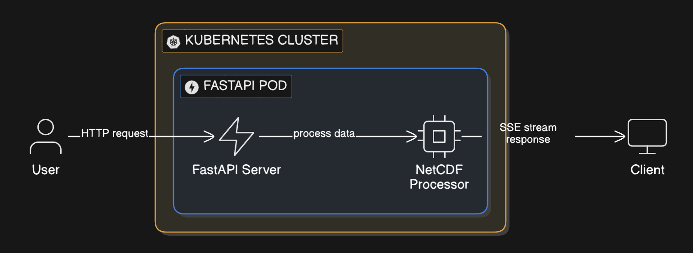
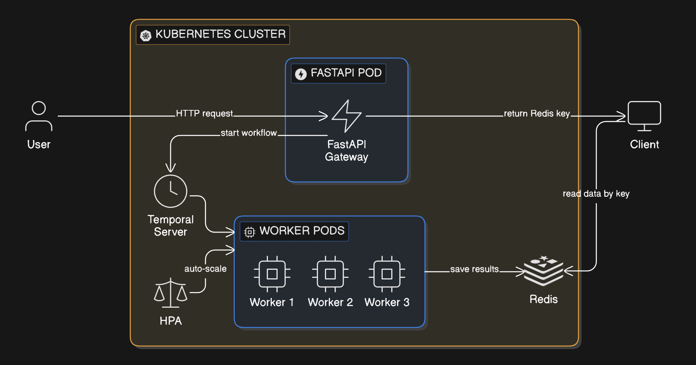
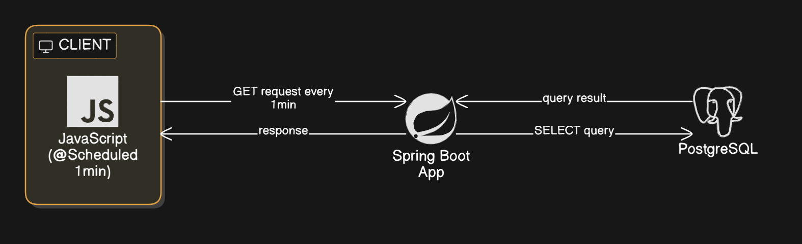
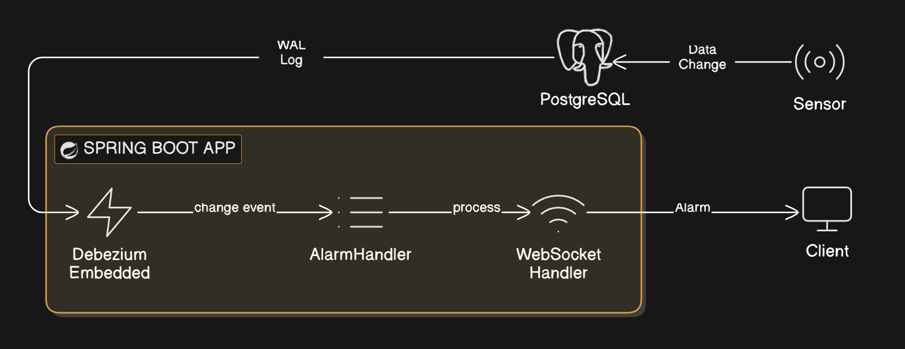
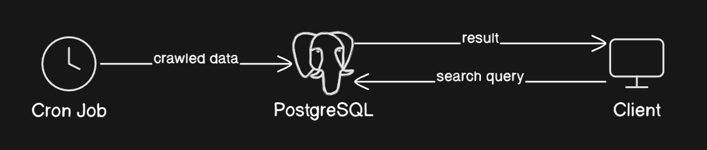
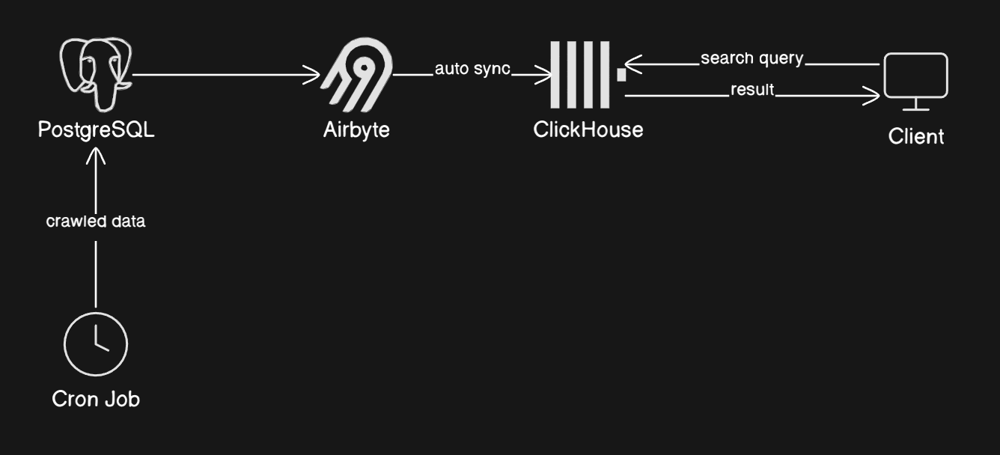
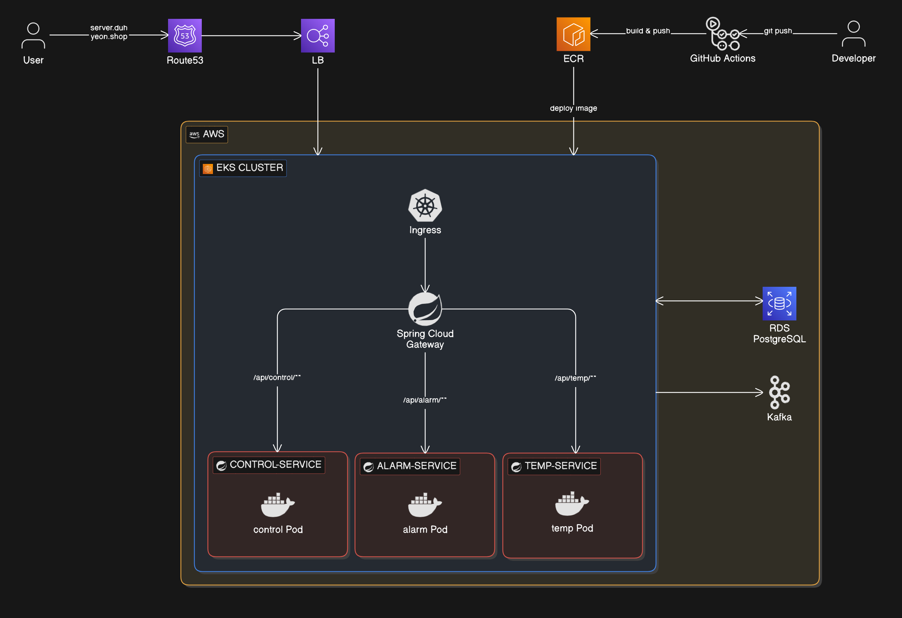

주요 프로젝트
NetCDF 데이터 처리 파이프라인 최적화
SSE 커넥션 타임아웃
대용량 NetCDF 응답을 클라이언트가 한 번에 수신 불가
단일 서비스 병목
동시 요청 증가 시 단일 FastAPI Pod에 병목 집중, 응답 지연 및 장애 전파
처리 시간 과다
NetCDF 파일당 수천 개 타임스텝 이미지 생성, 단일 Pod에서 평균 282초 소요로 사용자 대기 불가
재시도 로직 부재
데이터 가공 도중 에러 발생 시 전체 파이프라인 실패, 수동 재실행 필요

커넥션 불안정
FastAPI가 직접 NetCDF 처리 후 SSE로 스트리밍
스케일링 불가
단일 Pod에서 처리/응답을 모두 담당, 수평 확장 구조 부재

Temporal Workflow
Worker 단위 자동 재시도 및 타임아웃 선언적 관리
Redis 적재 + Key 반환
Worker가 가공 결과를 Redis에 저장, Gateway는 클라이언트에 Redis Key만 반환
HPA Worker 확장
Kubernetes HPA로 Worker Pod 자동 스케일링, 동시 처리량 수평 확장
threading.Lock
module-level Lock으로 HDF5 I/O 직렬화, dataset.load()로 파일 핸들 즉시 해제
왜 Temporal?
워크플로우 상태 추적, 자동 재시도, 타임아웃 관리가 선언적으로 가능. gRPC 기반으로 성능 우수.
왜 Redis?
NFS 대신 Redis에 적재하여 클라이언트 읽기 지연 최소화. TTL로 자동 만료 관리.
왜 threading.Lock?
HDF5 C 라이브러리 자체가 thread-safe 미지원. multiprocessing은 메모리 오버헤드가 큼. Lock + load()가 가장 경량 솔루션.
왜 HPA?
Temporal Worker의 max_concurrent_activities=2로 제한하되, Pod 수를 HPA로 수평 확장하여 처리량 확보.
✅ 배운 점
- C 라이브러리 레벨의 thread-safety 이슈를 Python에서 제어하는 방법 체득
- 워크플로우 오케스트레이션의 장애 복구 패턴 실무 적용 경험
- HPA 튜닝 시 minReplicas 설정이 cold-start 지연 해소에 핵심임을 확인
💭 아쉬운 점
- 초기에 HDF5 thread-safety 문제를 인지하지 못해 디버깅에 시간 소요
- Redis TTL 만료 시 데이터 유실 가능성에 대한 fallback 미구현
CDC 데이터 파이프라인 구축
JS 폴링 기반 조회
JavaScript에서 1분마다 @Scheduled로 Spring API를 호출, DB 전체 조회 후 클라이언트에 반환하는 비효율적 구조
수만 건 불필요한 쿼리
N개 테이블 × 24h × 60min = 하루 43,200건 이상 SELECT 쿼리, 변경 없어도 매분 실행
유지보수 어려움
기존 pg_notify 방식은 지자체 3곳 × notify 함수 N개, 트리거/함수 관리가 복잡
감지 지연 최대 1분
실시간 재난 알람 시스템에서 1분 지연은 사용자 안전에 직접적 영향

자원 낭비
변경 없어도 매분 전체 테이블 SELECT, DB CPU/IO 불필요 소모
pg_notify 한계
트리거별 notify 함수 직접 작성, 테이블 추가 시 매번 트리거/함수 수동 등록 필요

Debezium Embedded Engine
Spring Boot 안에 Debezium 내장, PostgreSQL WAL을 앱에서 직접 캡처 · 처리
AlarmHandlerRegistry
@AlarmTableHandle 어노테이션으로 테이블별 핸들러 자동 등록, 확장 시 클래스 추가만으로 완료
배치/즉시 처리 분리
알람 테이블은 즉시 처리, 계측기 테이블은 ConcurrentLinkedQueue 배치 처리로 효율화
Kafka 없는 경량 CDC
별도 Kafka 인프라 없이 단일 Spring Boot 앱으로 CDC 운영, 인프라 비용 절감
왜 Embedded Debezium?
Kafka Connect 방식은 Kafka 클러스터 필수. 사업 시스템 특성상 인프라 최소화가 중요, Embedded로 단일 앱 운영.
왜 WAL 기반?
트리거 기반(pg_notify)은 테이블마다 수동 등록 필요. WAL은 DB 레벨에서 모든 변경을 자동 캡처.
✅ 배운 점
- WAL 기반 CDC의 원리와 PostgreSQL replication slot 관리 방법 체득
- 커스텀 어노테이션 + Registry 패턴으로 확장 가능한 이벤트 핸들링 설계
- ConcurrentLinkedQueue로 멀티스레드 환경 안정성 확보
💭 아쉬운 점
- slot.drop.on.stop=true 설정으로 앱 재시작 시 일부 이벤트 유실 가능성 존재
- offset 저장을 FileOffsetBackingStore로 했는데, Pod 재시작 시 offset 유실 위험
LLM 기반 워크플로우 오케스트레이션 시스템
LLM 응답 불안정
OpenAI API 호출은 응답 시간이 길고 불안정 — 타임아웃, 토큰 제한, Rate Limit 발생
동기 호출 UX 저하
단순 동기 호출 시 클라이언트가 응답 완료까지 대기, 45초+ 블로킹
체인 실패 시 전체 재실행
LLM 체인이 복잡해질수록 중간 실패 시 전체 파이프라인 재실행 필요
LLM 교체 어려움
비즈니스 로직과 LLM 호출이 결합되어 모델 교체 시 수정 범위가 넓음

Temporal Workflow
LLM 호출을 Activity 단위로 분리, 단계별 자동 재시도 보장
LangChain 체인
프롬프트 → LLM(OpenAI) → 후처리 체인 구성, 모듈별 교체 용이
Redis Pub/Sub
처리 상태를 실시간 스트리밍, 클라이언트에 즉시 피드백 전달
Activity 분리
LLM 교체 시 수정 범위를 1개 모듈로 한정, 확장성 확보
웹툰 검색 파이프라인 구축
수동 적재
1분 주기 크론 크롤링 후 수동으로 DB 적재
검색 속도 저하
PostgreSQL 행 기반 검색으로 데이터 증가 시 OLAP 쿼리 성능 급락


Airbyte 자동 Sync
크롤링 데이터 자동 수집 · 적재, 수동 작업 100% 제거
ClickHouse 전환
컬럼형 OLAP 엔진으로 대량 검색 쿼리 성능 대폭 개선
왜 Airbyte?
커넥터 기반 EL(Extract/Load) 자동화, 스케줄 Sync로 정합성 보장. Airflow 대비 설정이 간단.
왜 ClickHouse?
웹툰 검색은 집계/필터 위주의 OLAP 패턴. PostgreSQL 행 기반 대비 컬럼형 스캔이 압도적으로 빠름.
✅ 배운 점
- EL(Extract/Load)과 ETL 파이프라인의 차이와 적합한 사용 시나리오 이해
- OLTP(PostgreSQL) vs OLAP(ClickHouse)의 쿼리 패턴별 성능 차이 체감
💭 아쉬운 점
- ClickHouse의 UPDATE/DELETE 제약으로 데이터 수정 시 재적재 필요
GIVE ME CONTROLLER — MSA 에어컨 제어 시스템
MSA 깊이 이해 필요
회사에서 46개 MSA 서비스를 운영하면서 전체 구조를 직접 설계부터 배포까지 경험할 필요성 체감
AWS 경험 확보
회사는 KakaoCloud 사용, AWS EKS/ECR/RDS 경험을 통해 멀티 클라우드 범용성 확보 목표

Spring Cloud Gateway
API 라우팅, 3개 서비스 분리 (control / alarm / temp)
Kafka 이벤트 전파
에어컨 상태 변경 시 control → alarm/temp 서비스로 비동기 이벤트 전달
AWS EKS + ECR
4노드 클러스터(t3.small), 서비스별 ECR 리포지토리, GitHub Actions CI/CD
실시간 통신
alarm-service: WebSocket 익명 채팅, temp-service: SSE 실시간 상태 갱신
✅ 학습 성과
- MSA 구조 설계 → 구현 → 배포 전 사이클 직접 경험
- Kafka 이벤트 드리븐 패턴으로 서비스 간 느슨한 결합 구현
- Route53 → LB → Ingress → Gateway → Service 전체 네트워크 흐름 이해
- 회사 실무에 AWS EKS 경험을 대비하여 클라우드 범용성 확보
💭 아쉬운 점
- t3.small 4노드로 비용 부담, 장기 운영 시 Spot Instance 활용 필요
- 서비스 간 장애 전파 차단(Circuit Breaker) 미적용